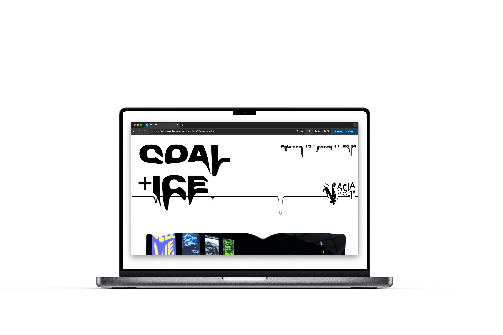
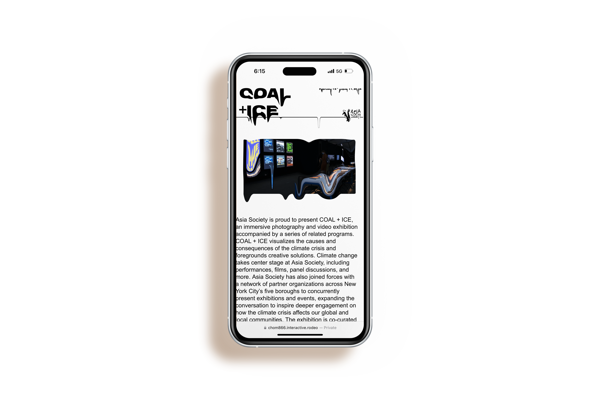

“Coal + Ice” is a groundbreaking web design project inspired by the event of the same name hosted by the Asian Society. This project ingeniously utilizes a temperature API to visually represent the effects of global warming. The concept behind “Cole + Ice” is both simple and profound. As the temperature rises, the website begins to melt, providing users with a visceral and interactive representation of the impact of climate change.
 